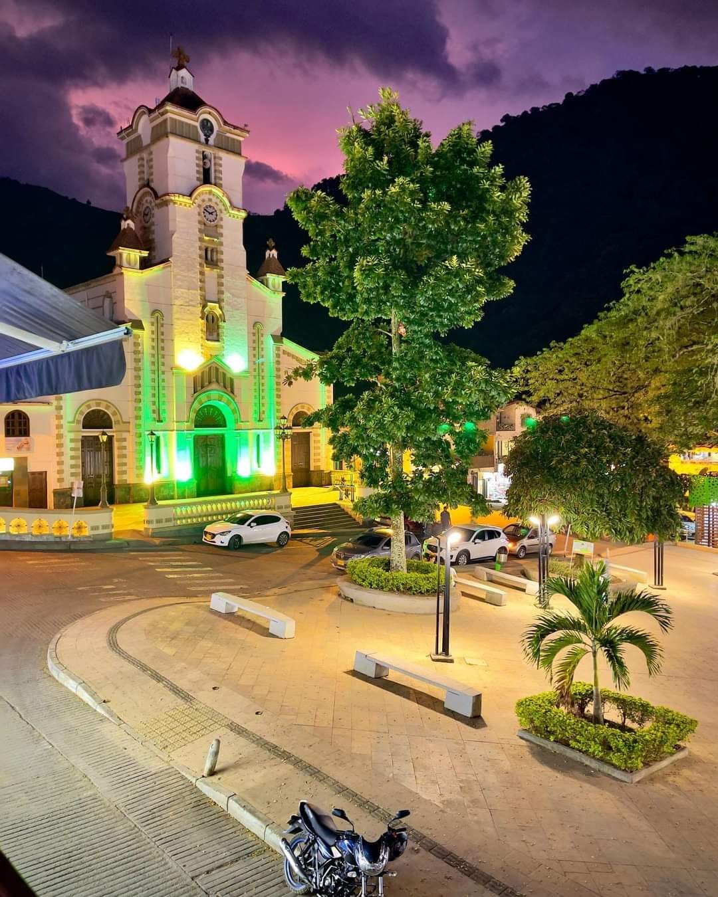
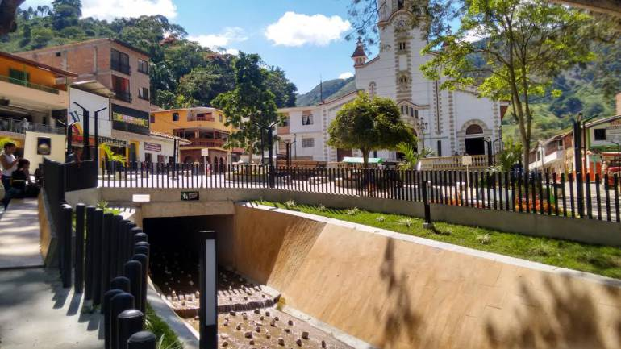
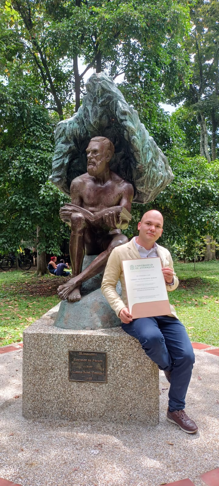
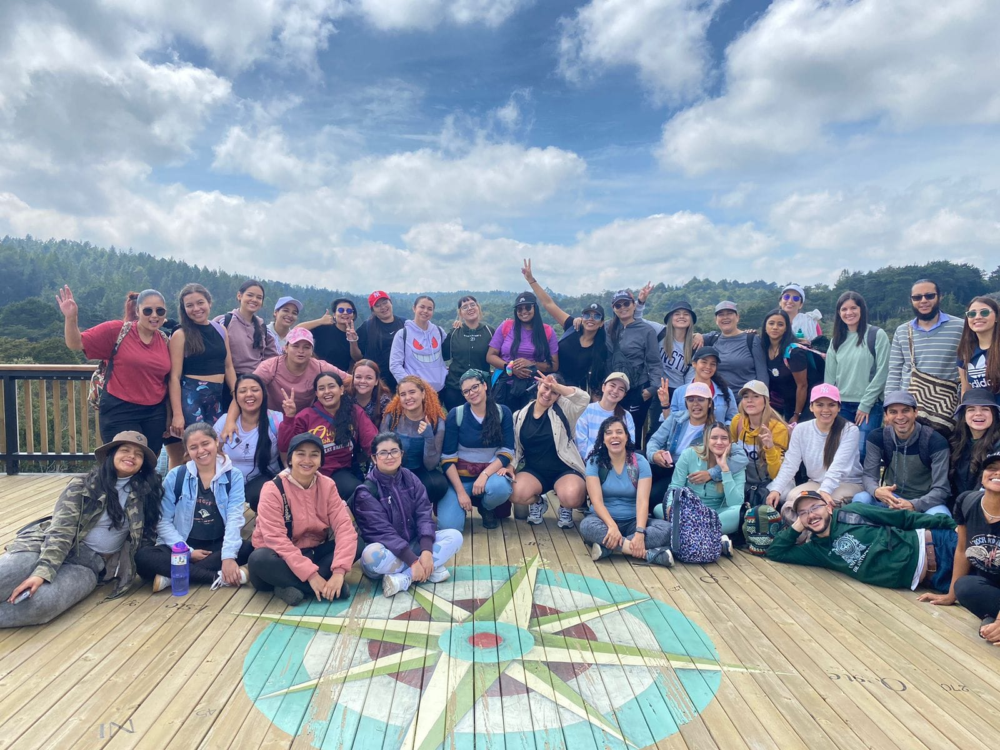
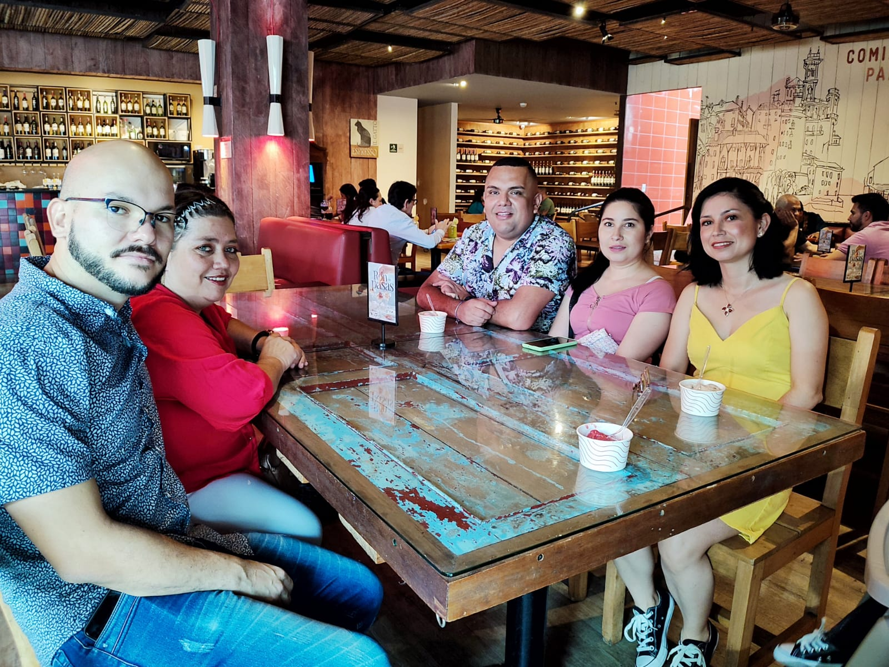

Bienvenido al mundo de Gabriel
Mi lugar de nacimiento y un poco de la historia de mi juventud
Nací en Salgar, Antioquia, el 6 de noviembre de 1989, un pequeño municipio del suroeste del departamento. Mis padres, Luz Marina Moreno y José Albeiro Machado, son oriundos de Ciudad Bolívar, un pueblo cercano. Salgar es un lugar lleno de belleza y gente humilde, donde crecí rodeado de árboles y quebradas que me conectaban con la naturaleza. Realicé mis estudios primarios en la escuela urbana Ramón Vélez Isaza y la primera parte del bachillerato en el colegio Julio Restrepo. Sin embargo, a la edad de 14 años, debí mudarme al municipio de Bello debido a dificultades económicas que enfrentaban mis padres. Dejar Salgar fue difícil. Era un lugar mágico para mí, lleno de recuerdos felices y una conexión profunda con la naturaleza. Sin embargo, me adapté rápidamente a mi nuevo hogar en Bello. En el colegio Fe y Alegría Josefa Campos, encontré nuevos amigos y comencé a construir una nueva vida.
A pesar de los cambios, siempre he conservado un cariño especial por Salgar. Es el lugar donde nací y crecí, donde están mis raíces. Cada vez que tengo la oportunidad, regreso a mi pueblo querido para reencontrarme con mi familia y amigos, y revivir aquellos recuerdos que marcaron mi infancia. Mi historia es la de muchos colombianos que han tenido que migrar a las ciudades en busca de mejores oportunidades. Es un viaje que no siempre es fácil, pero que también puede ser una oportunidad para crecer y descubrir nuevas posibilidades. En mi caso, la experiencia me ha enseñado la importancia de la adaptación, la resiliencia y la capacidad de encontrar la felicidad en cualquier lugar. También me ha permitido valorar mis raíces y el lugar donde nací, un pequeño pueblo lleno de belleza y gente maravillosa.
Mi trayectoria profesional
Me formé como Licenciado en Matemáticas en la Universidad de Antioquia, una carrera que me apasiona y me permite aprender mientras enseño, en un ciclo continuo de conocimiento y experiencia. Mi camino profesional comenzó en el INEM, donde realicé mis prácticas académicas, y luego tuve la oportunidad de dictar preuniversitarios en un colectivo pedagógico del municipio de Bello. Posteriormente, impartí un preicfes con Instruimos en la comuna 3 de Medellín. Cada experiencia ha sido un aprendizaje invaluable que me ha permitido crecer como profesional y como persona. Me siento afortunado de poder dedicar mi vida a algo que me apasiona y que me permite contribuir a la formación de las nuevas generaciones.
Actualmente, tengo el placer de trabajar en el colegio Cosmo Schools, una institución creada por Comfama que se caracteriza por ofrecer experiencias de aprendizaje únicas y maravillosas. En este espacio, los jóvenes que acompaño en su proceso educativo tienen la libertad de explorar y descubrir sus intereses, lo que enriquece su formación de manera integral. Son jóvenes felices, con una actitud positiva y un gran entusiasmo por aprender a través del descubrimiento, la experimentación y la aventura. Esta pasión por el conocimiento me motiva a seguir aprendiendo y creciendo como profesional, para brindarles las herramientas y el acompañamiento que necesitan para alcanzar su máximo potencial.
Mi equipo de trabajo
Actualmente me encuentro trabajando en Cosmo, un colegio con un modelo pedagógico diferente y moderno, un lugar de aprender se hace desde la experiencia y desde el descubrimiento experiencial de las cosas. Somos un colegio que cree en las pedagogías activas como recurso innovador y moderno. Actualmente hay 10 sedes en todo el área metropolitana y algunos municipios cercanos, pero la idea es expandirse más allá de antioquia.
Familia
Tengo una familia bastante numerosa, sin embargo, son pocos los primos y tíos con los que frecuento salir. Generalmente, lo hago con mi prima Dora, Leidy y mi primo Carlos. También se nos une nuestra tía, la niña de la familia, Rubiela, ella es una persona maravillosa y con muchas cualidades. Generalmente, salimos a comer los fines de semana, o a ver una película. También practicamos senderismo en los lugares cercanos a medellín. El resto de mi familia (papá, mamá y hermana) aunque somos un poco mas cercanos, no nos vemos con tanta frecuencia, ya que cada uno tiene sus diferentes obligaciones.
Generalidades
Soy un hombre de gustos simples, amo la naturaleza, el anime, el rock, me encanta disfrutar de un buen café y salir a conversar con amigos. Soy una persona que generalmente es muy tranquila y organizada. Mde gusta mucho leer. Por último, tengo dos integrantes importantes de mi familia (Luna y Gohan) Que son mis hijos adoptivos, mis gatos